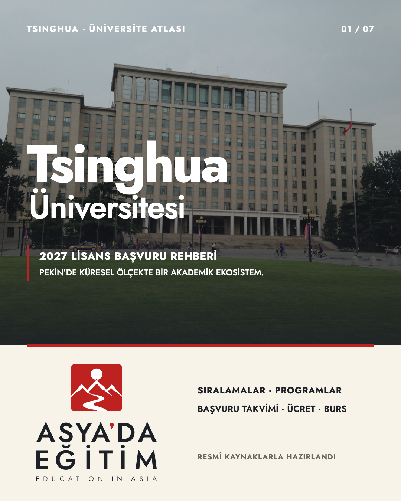
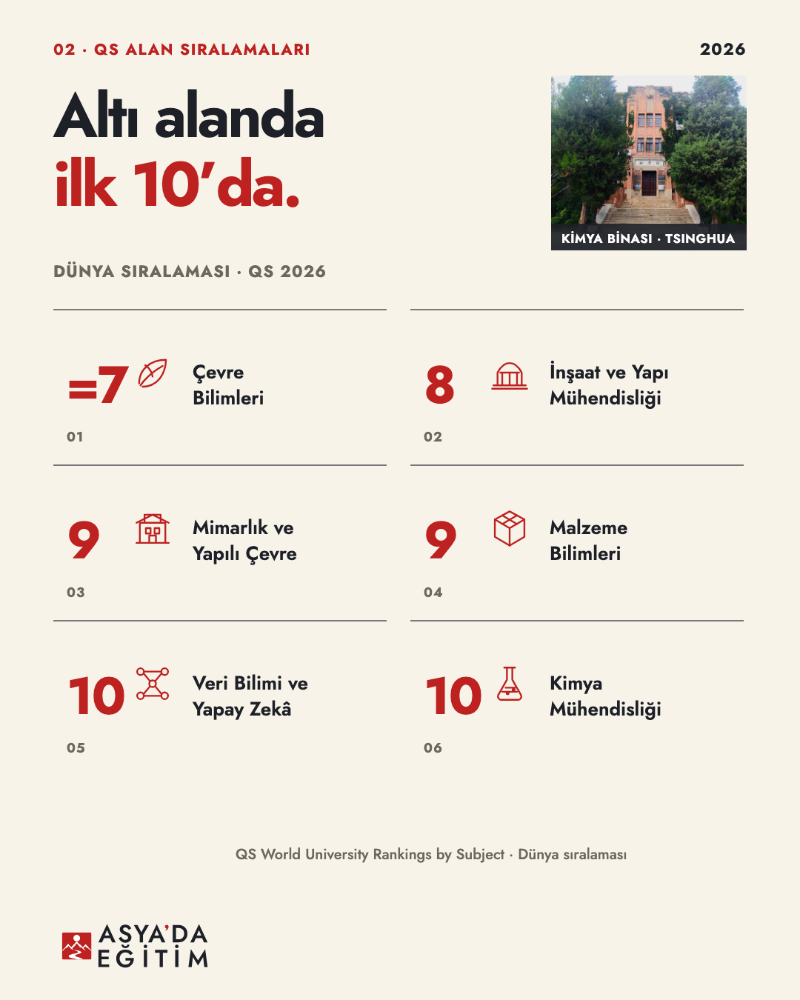
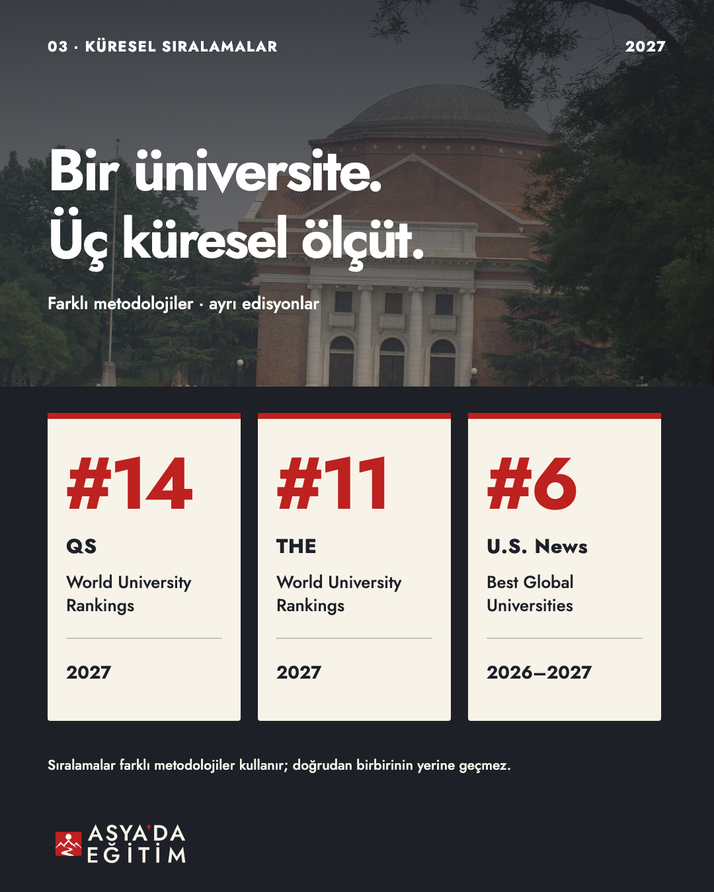
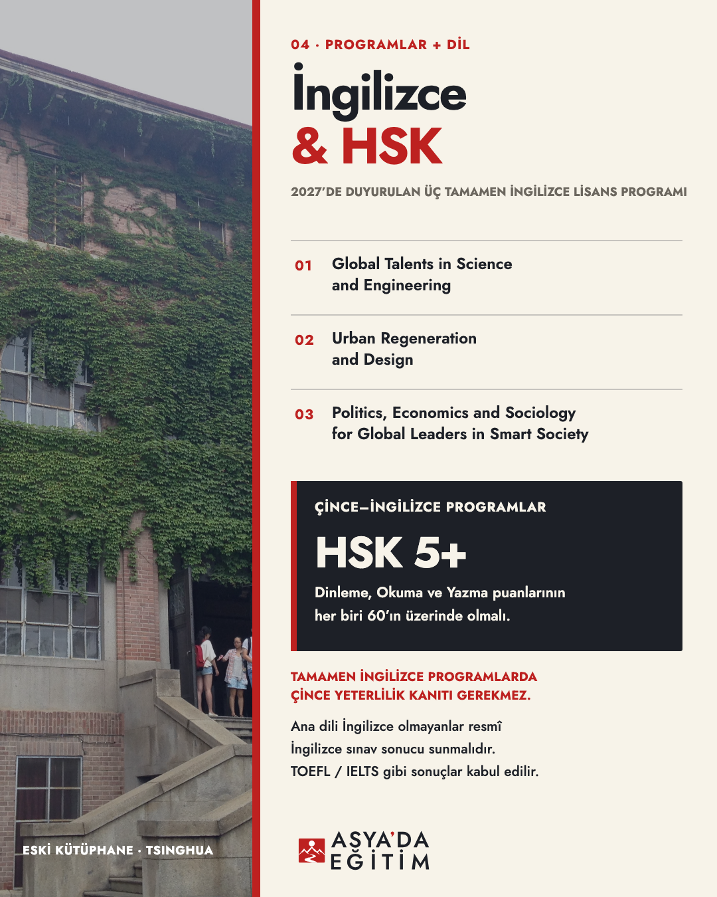
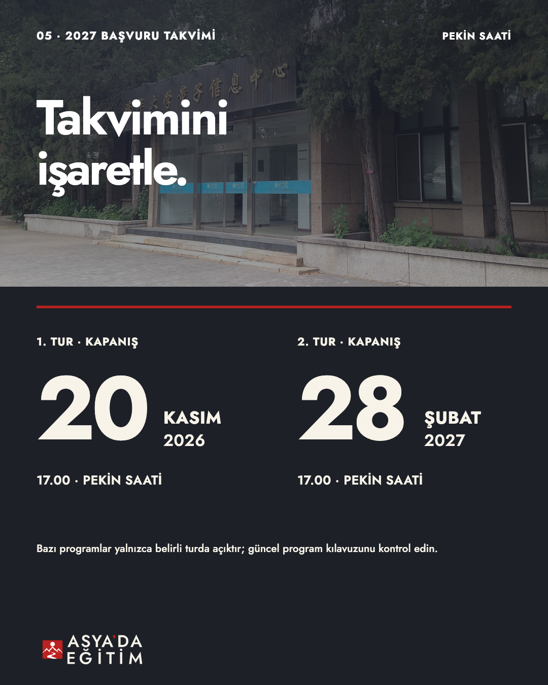
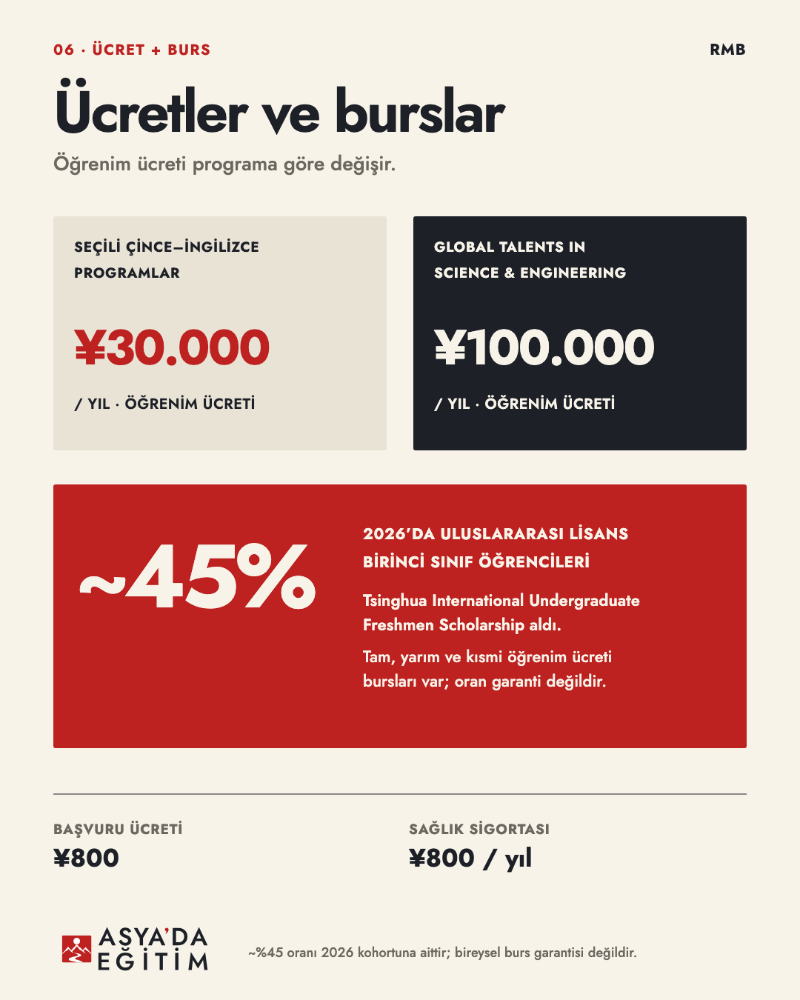
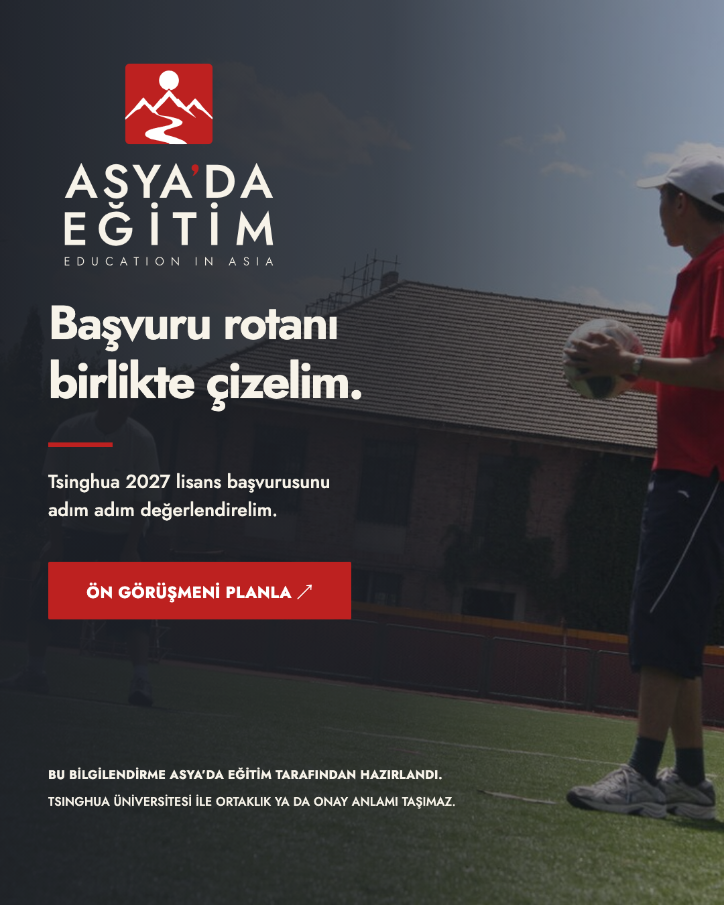

Yedi slaytlık yeni düzen: alan sıralamaları, küresel sıralamalar, İngilizce programlar/HSK, başvuru tarihleri, ücretler ve burslar. V1 ayrı olarak korunmuştur. Asya’da Eğitim’in onaylı seal/lockup ailesi kullanılmıştır; kapsamlı bir brand-system onayı iddia edilmez.






